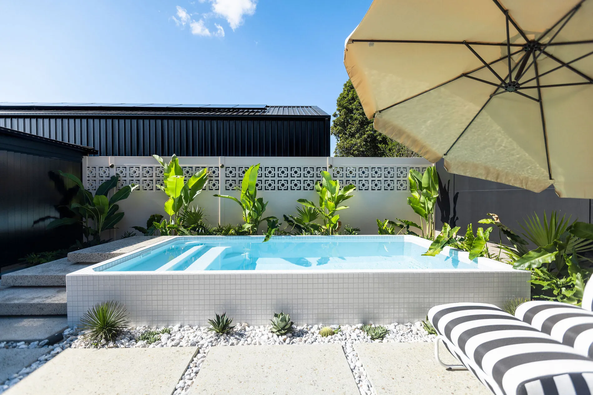
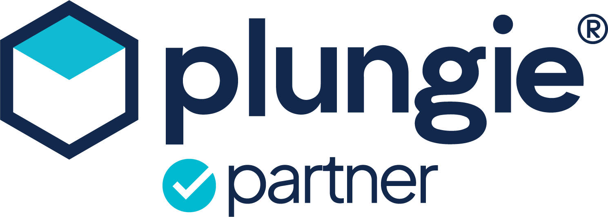
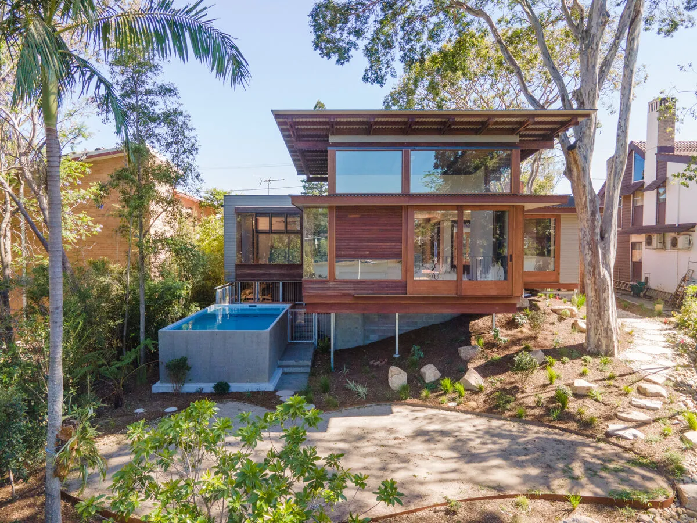

We're an official Plungie Partner. A premium, pre-cast plunge pool, delivered and craned in, then finished with the fencing and landscaping to match.

Bespoke Pools and Landscapes is an official Plungie Partner, bringing you their full range of award-winning pools and specialising in seamless installation. A Plungie is engineered off-site, delivered to your home and craned into place, so you're swimming far sooner than a traditional build.

A custom concrete pool is worth the wait, but a Plungie is on average around 74% faster than a traditional in-situ pool. It arrives as a single-pour, award-winning shell with no joins, then we handle the rest.
From the compact Studio to the family-sized Max. Hover to compare them all, click a pool to see it built.
Auto-rotating · hover to compare all five · click a pool to see that model built
Every Plungie is a single-pour, precast concrete pool with no joins, finished in your choice of seven ecoFinish colours and backed by a 10-year warranty.
| Model | Size | Best for |
|---|---|---|
| Plungie Quad | 2.2 × 2.2m | Courtyards and the tightest spaces |
| Plungie Studio | 3.6 × 2.2m | Small yards, townhouses and side setbacks |
| Plungie Arena | 3.5m round | A sculptural centrepiece for entertaining |
| Plungie Original | 4.6 × 2.5m | The all-rounder for most Brisbane backyards |
| Plungie Max | 6 × 3m | Families who want room to actually swim |
Plungie's ecoFinish coatings set the mood of the water. Hover a tile to see the finish, click it to see pools built in that colour.
Colours are indicative on screen. We'll show you real samples against your space.
An official Plungie Partner, installing genuine Plungie pools across Brisbane.
Josh made the whole process easy and stress-free. The communication was excellent and the attention to detail really stood out. We're thrilled with the pool and wouldn't hesitate to recommend Bespoke.
Thank you for the journey and for helping us make our vision a reality. The professionalism, calm demeanour and customer focus are exceptional.
It comes down to space, budget and how you'll use it. The Plungie Quad and Plungie Studio suit courtyards and tight blocks. The Plungie Original is the all-rounder. The Plungie Arena is round, and the Plungie Max is the family-sized option with room to actually swim. We measure up on the first visit and tell you which fits best.
All three work. In-ground gives the cleanest look. Aboveground needs the least excavation and suits rock or difficult soil. Semi-recessed sits partway out of the ground and works well on sloping blocks, often with a deck built around it. We'll recommend the one that suits the site.
Yes. In Queensland, any pool or spa that can hold 300mm of water or more needs building approval and a compliant pool barrier, and plunge pools are no exception. We handle the approval and certification, and build the fencing as part of the job.
The pool arrives on a truck and is lifted into place by crane, usually over the house or side fence. We check crane access, overhead power lines and where the truck can park on the first site visit, so crane day goes smoothly.
Plungie pools are backed by a 10-year warranty and independently audited concrete testing. The shell is a single pour with no joins. We look after the installation and the work around it.
Seven ecoFinish interior coatings: Blue Lagoon, Mediterranean Blue, Grey Reef, Kona Coast, French Grey, Sahara Sand and Perle Noire. Hover the swatches above to compare, or click one to see pools built in that colour.
A Plungie is faster, with less disruption and a smaller footprint. A custom concrete pool can be any shape or size and is designed from scratch around your block. If you're unsure, we'll tell you honestly which makes more sense for your space and budget.
Tell us about your space. We'll let you know which Plungie suits, or whether a custom build is the better fit.
Enquire about a plunge